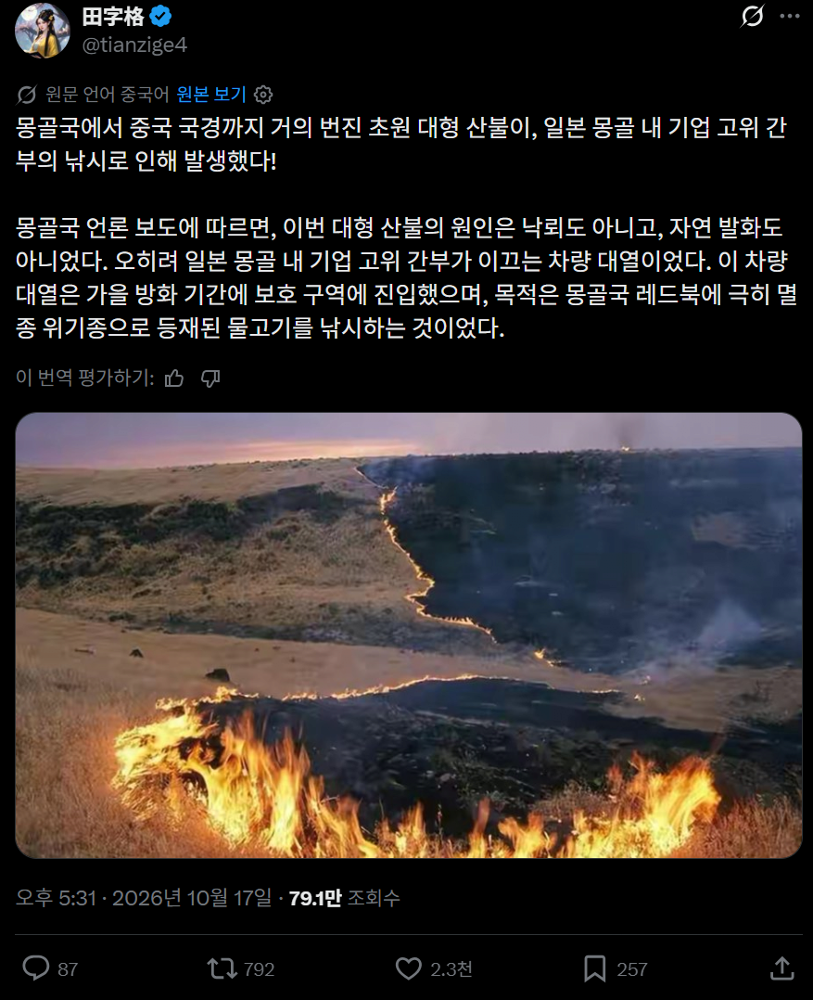
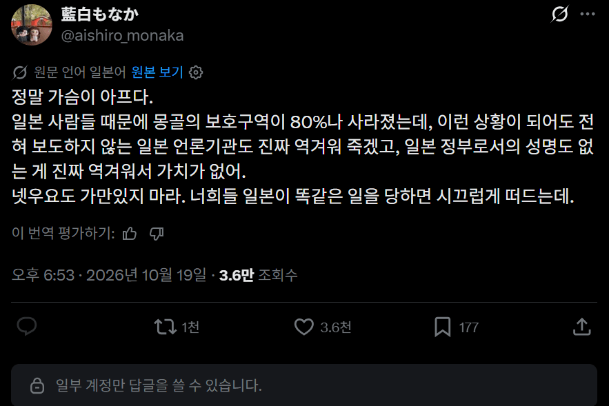
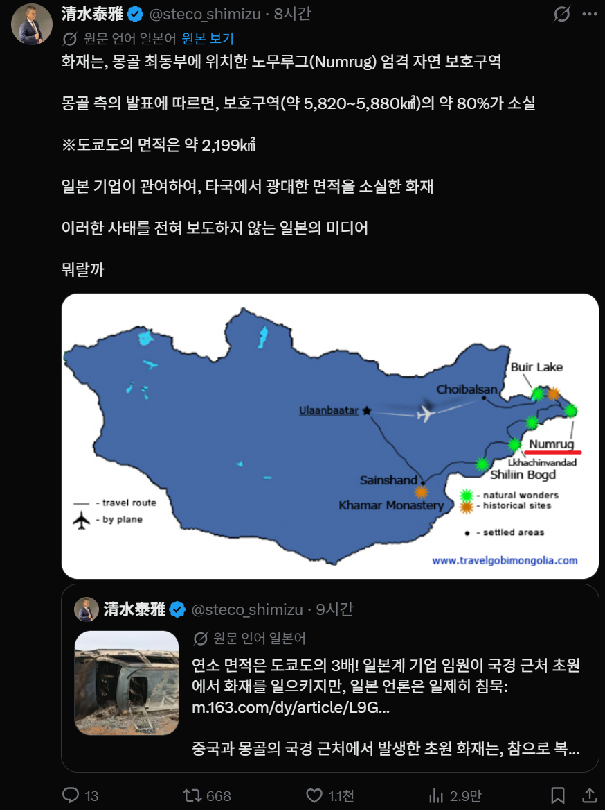
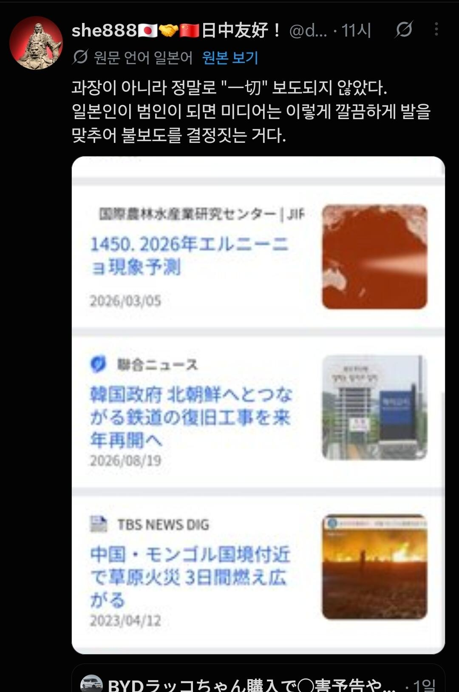

일본 기업인들이 몽골과 중국 국경에서 불법 레저 즐기다가 대형 산불내고 나흘동안 활활 타올라서 몽골 보호 구역 80%가 날라감



근데 일본에서는 뉴스 보도가 단 한줄도 안나옴 ㅋㅋ

일본 기업인들이 몽골과 중국 국경에서 불법 레저 즐기다가 대형 산불내고 나흘동안 활활 타올라서 몽골 보호 구역 80%가 날라감



근데 일본에서는 뉴스 보도가 단 한줄도 안나옴 ㅋㅋ
보호구역의 80%는 상상도 안되네;
사실 봄 가을의 초원은 낙뢰 등으로 인한 자연발화도 흔하고 자주 일어남. 자연계에서도 무수히 많이 반복되어온 일이라 몇개월이면 금방 회복되긴 하는데 타국에서 저지랄 해놓고 입꾹닫하는거 보면 일본새끼들 강약약강 졸렬음습함은 알아줘야함
얘들 정치쪽은 거의 중세같던데
역시 니혼 중국이 낸 불을 일본이 꺼주었구나
좀 오버해서 충청도 사이즈 만큼 태워 먹었다는 거네
이제 몽골에서 일본어해도 중국같이 강냉이 털리겠네
'아임 코리안'이라 써진 티셔츠 입고 가야 할 듯.
조만간 몽골의 항의가 커지고 국제 매스컴을 많이 타면 사고친 임원은 조선인의 피가 흐르는 재일 조선인이고 알아서 자살해라고 압력 넣을거니 걱정들 마셈, 아직 시나리오를 다듬는 중이니까 차분히 기다리도록 ㅋㅋㅋㅋㅋㅋㅋㅋㅋㅋㅋㅋ
하긴 그러고도 남을것들이지
한 놈쯤은 좀 해라 어떻게 손발이 이렇게 착착 맞냐
한결같이 호로좆같은 새끼들
이건 국가적 관계에도 영향을 미치는 사건 아니냐 ㄷㄷ
몽골에 있는 일본애들 얼른 귀국해야겠네 참깨꼴나기전에 ㅋㅋ
대형 사고 처버렸구만
처음 보면 참깨새끼들 이거 구라치는 거 아닌가 싶었는데 ceo가 사과까지 한 거 보면 난리나겠는걸
중국보다 몽골이 더 당함ㅠㅋㅋㅋㅋㅋㅋ
선택적 메이와쿠 문화 음슴한 놈들 ㅋㅋㅋㅋ
냄새가 났으니 뚜껑을 덮은거지뭐
괜히 도쿄랑 교토에 핵맞을 뻔한 애들 아님
오펜하이머가 죄의식 때문에 개소리 안했으면 도쿄랑 교토 날아갔을 애들이고
핵미사일 미국에서 대피하라고 선경고 날렸을때 의도적으로 히로뽕 풀고 국민들 희생시킬 정도로 쓰래기 같은 인성 가진 국가임
한국기업이 나무를 심어 숲을 만드니 일본기업이 초원을 태워 음양의 조화를 맞추네. 역시 음양사의 나라
근데 왜 중국인들이 빡침? 몽골이 몽골이지 중국이 아니잖아. 대기 오염 피해?
몽골-중국 국경선 인근에도 불이 번졌어서 중국군이 급하게 국경선에 파견되어 방화작업했다고 함.
화선이 수십 킬로미터급으로 길다보니 조금만 더 늦었으면 내몽골자치주도 화재가 크게 번졌을 뻔했대.
메이와쿠? ㄹㅇㅋㅋ